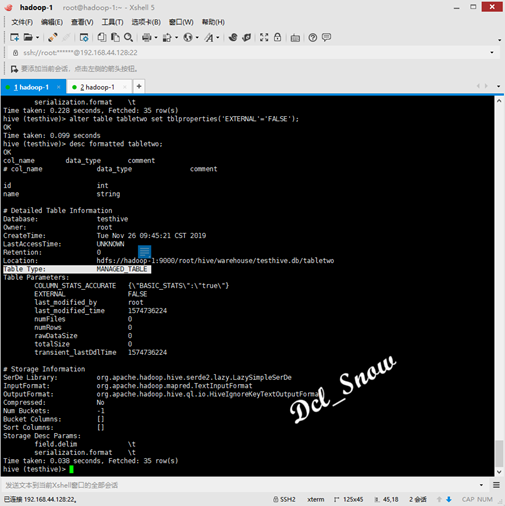

hive命令 Hive的set
Hive数据类型 Java数据类型 描述 TINYINT byte 1byte整数 SMALLINT short 2byte整数 INT int 4byte整数 BIGINT long 8byte整数 BOOLEAN boolean true/false FLOAT float 单精度浮点数 DOUBLE double 双精度浮点数 STRING string 字符，可以用单引号或双引号 TIMESTAMP 时间类型 BINARY 字节数组
数据类型 描述 STRUCT 结构体，通过“点”符号访问元素内容 MAP 一组键-值对元祖集合，使用数组表示法可以访问数据 ARRAY 是一组具有想同类型和名称的变量的集合 DDL操作 外部表 2. 查询表类型： 表类型转换 2. 内部表转换为外部表 3. 外部表转换为内部表 修改表名 注意：与Hbase数据表关联的Hive外部表，不能进行表类型转换，也不能修改表名，若需要修改表名则需在Hbase中进行修改。 删除外部表，可以看到Hbase中，该数据表仍然存在，不会被删除。
在Linux下的命令行中直接输入如下命令，可以查看帮助信息：
1 # hive -help
常用的如-e、-f参数。
使用-e参数，可以直接在命令行传递SQL语句进行hive表数据的查询：
1 # hive -e "select * from testhive.testtable"
使用-f参数，可以在命令行中传递文件进行进行hive表数据的查询，首先使用如下命令创建一个名为test.hql的文件：
1 # vim test.hql
在该文件中写入SQL语句：
1 select * from testhive.testtable
然后在Linux命令行执行如下命令：
1 # hive -f test.hql
并且该执行查询的结果可以追加到文件中：
1 # hive -f test.hql > result.txt
2 # cat result.txt
执行如下命令，可以查看hive中执行过的所有历史命令：
1 # cat .hivehistory
Hive的其他配置
现在hive查询出来的数据显示很不友好，为了显示数据头信息，通过如下配置文件项开启配置：
1 <property>
2 <name>hive.cli.print.header</name>
3 <value>true</value>
4 </property>
在Hive客户端中时，为了显示当前操作哪个数据库，通过如下配置文件项开启配置：
1 <property>
2 <name>hive.cli.print.current.db</name>
3 <value>true</value>
4 </property>
在Hive的客户端中，可以使用set命令进行配置，该配置当前操作有效：
1 hive (default)> set hive.cli.print.current.db=false;
关闭了当前操作的数据库位置显示。
Hive的数据类型
基本数据类型
Hive的数据类型与Java的数据类型对应关系:
集合数据类型
数据实例
DDL（Data Definition Language：数据定义语言）主要是用在定义表结构、改变表的结构、改变表数据类型、改变表之间的链接和约束等。
创建数据库
创建一个数据库： 1 > create database db_testdb;
若创建的数据库已经存在，则会报错，这时可以使用if not exists判断：
1 > create database if not exists db_testdb;
注意：标准写法是使用if not exists判断的创建数据库语句。
查询数据库
查询Hive中的数据库：
1 > show databases;
查询数据库信息：
1 > desc database db_testdb;
查询数据库详细信息（数据库有额外的属性时）：
1 > desc database extended db_testdb;
切换数据库：
1 > use testhive;
删除数据库
删除空的数据库：
1 > drop database db_testdb;
若删除的数据库不存在，则会报错，这时可以使用if exists判断：
1 drop database if exists db_testdb;
使用cascade，强制删除有数据的数据库：
1 drop database if exists db_testdb cascade;
创建数据库表
建表语法：
1 CREATE [EXTERNAL] TABLE [IF NOT EXISTS] table_name
2 [(col_name data_type [COMMENT col_comment], ...)]
3 [COMMENT table_comment]
4 [PARTITIONED BY (col_name data_type [COMMENT col_comment], ...)]
5 [CLUSTERED BY (col_name, col_name, ...)
6 [SORTED BY (col_name [ASC|DESC], ...)] INTO num_buckets BUCKETS]
7 [ROW FORMAT row_format]
8 [STORED AS file_format]
9 [LOCATION hdfs_path]
字段解释说明：
1.CREATE TABLE 创建一个指定名字的表，如果相同名字的表已经存在，则抛出异常；用户可以用 IF NOT EXISTS 选项来忽略这个异常。
2.EXTERNAL关键字可以让用户创建一个外部表，在建表的同时指定一个指向实际数据的路径（LOCATION），Hive创建内部表时，会将数据移动到数据仓库指向的路径；若创建外部表，仅记录数据所在的路径，不对数据的位置做任何改变。在删除表的时候，内部表的元数据和数据会被一起删除，而外部表只删除元数据，不删除数据。
3.COMMENT：为表和列添加注释。
4.PARTITIONED BY创建分区表。
5.CLUSTERED BY创建分桶表。
6.SORTED BY外部表数据源，例如后续使用的Hbase数据。
7.ROW FORMAT
DELIMITED [FIELDS TERMINATED BY char] [COLLECTION ITEMS TERMINATED BY char] [MAP KEYS TERMINATED BY char] [LINES TERMINATED BY char]
| SERDE serde_name [WITH SERDEPROPERTIES (property_name=property_value, property_name=property_value, ...)]
用户在建表的时候可以自定义SerDe或者使用自带的SerDe。如果没有指定ROW FORMAT 或者ROW FORMAT DELIMITED，将会使用自带的SerDe。在建表的时候，用户还需要为表指定列，用户在指定表的列的同时也会指定自定义的SerDe，Hive通过SerDe确定表的具体的列的数据。
SerDe是Serialize/Deserilize的简称，目的是用于序列化和反序列化。
8.STORED AS指定存储文件类型
常用的存储文件类型：SEQUENCEFILE（二进制序列文件）、TEXTFILE（文本）、RCFILE（列式存储格式文件）
如果文件数据是纯文本，可以使用STORED AS TEXTFILE。如果数据需要压缩，使用 STORED AS SEQUENCEFILE。
9.LOCATION ：指定表在HDFS上的存储位置。
10.LIKE允许用户复制现有的表结构，但是不复制数据。
内部表
默认创建的表都是内部表，这类表有Hive控制生命周期，默认会将表数据存储在配置文件中配置项指定的目录下： 1 <property>
2 <name>hive.metastore.warehouse.dir</name>
3 <value>/root/hive/warehouse</value>
4 <description>location of default database for the warehouse</description>
5 </property>
当删除内部表时，该表的数据也会被删除。
说明：内部表不适合与其他工具共享数据。
1. 创建表
1 > create table if not exists tableone (id int,name string) row format delimited fields terminated by '\t';
2. 根据已经存在的表结构创建表
1 > create table if not exists tabletwo like tableone;
3. 查询表类型
1 > desc tableone;
外部表，Hive并不完全拥有数据。
例如：数据存储在Hbase的表中，此时创建的外部表若删除，则数据仍然存储在Hbase中，不会被删除。
此处使用前文中的Hbase中的表testtableone（前文连接https://www.cnblogs.com/Dcl-Snow/p/11433031.html），进行操作。 1 create external table if not exists htesttableone (row2 string,info map<string,string>) stored by 'org.apache.hadoop.hive.hbase.HBaseStorageHandler' with serdeproperties("hbase.columns.mapping" = ":key,info:") tblproperties("hbase.table.name" = "testtableone");
1 > desc formatted htesttableone;
可以看到表类型为外部表：
1. 查询tabletwo表类型：
1 > desc formatted tabletwo;
1 > alter table tabletwo set tblproperties('EXTERNAL'='TRUE');
 1 > alter table tabletwo set tblproperties('EXTERNAL'='FALSE');
1 > alter table tabletwo rename to tablethree;
删除表
1 > drop table htesttableone;
{kind=link}
{kind=link}
{kind=link}
{kind=link}
{kind=link}
{kind=link}
{kind=link}
{kind=link}
{kind=link}
{kind=link}
{kind=link}
{kind=link}
{kind=link}
{kind=link}
{kind=link}
{kind=link}
{kind=link}
{kind=link}
{kind=link}
{kind=link}